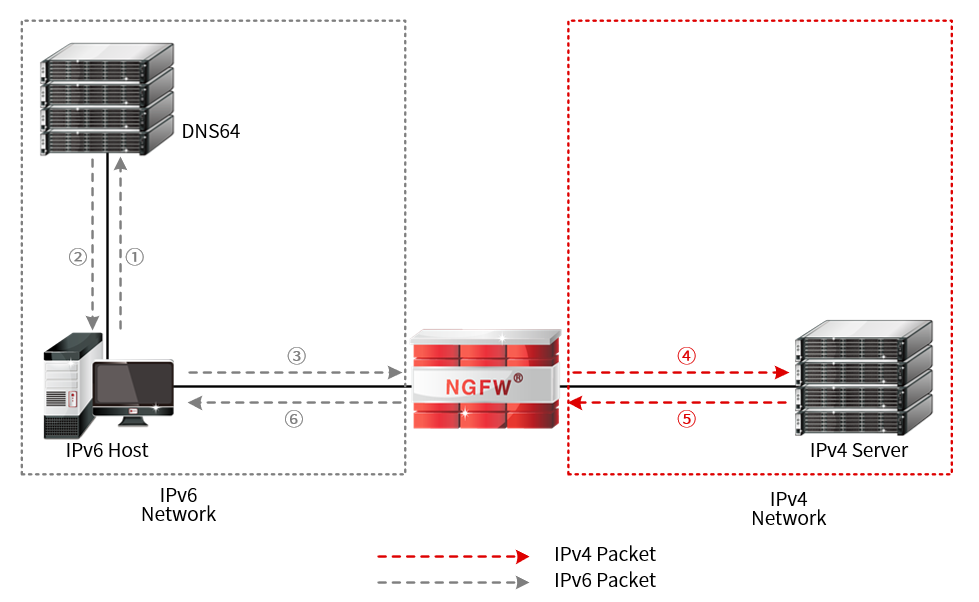
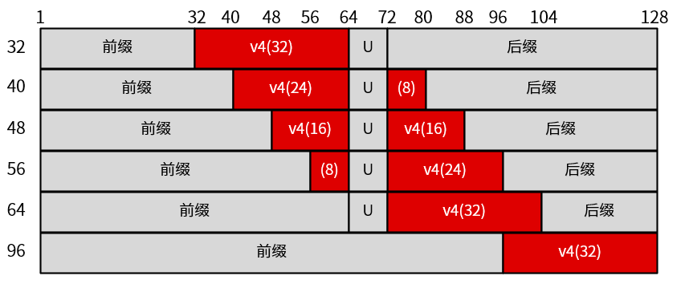
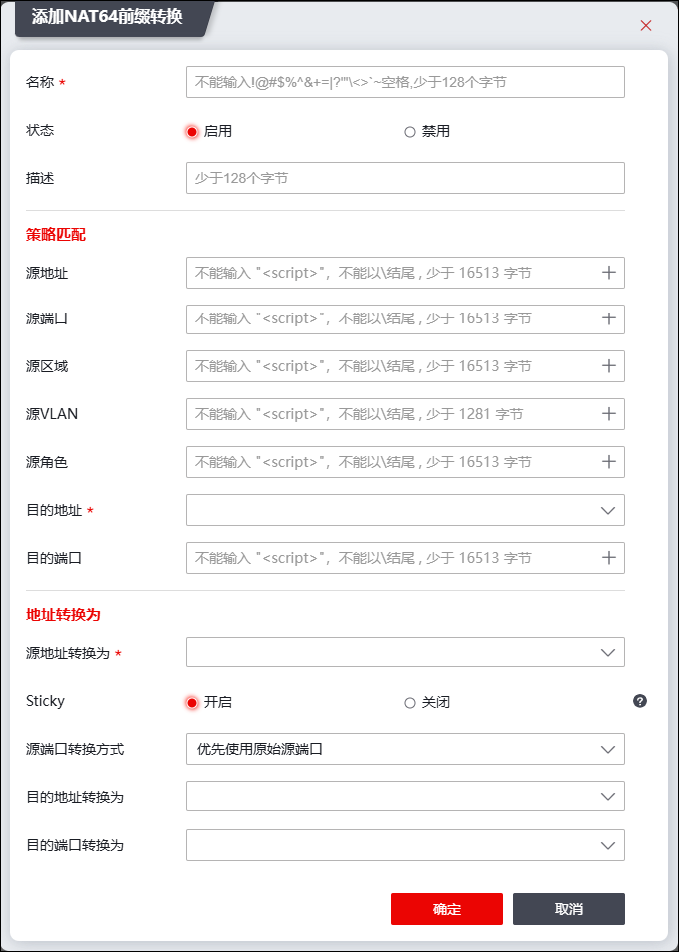

NAT64是一种IPv6网络访问IPv4网络的过渡技术，通过更改报文的头部地址信息，实现IPv6和IPv4网络的互通。
l静态转换
NGFW系统支持配置NAT64静态转换，将特定的IPv4地址和IPv6地址进行互相转换。
配置NAT64静态转换后，当IPv6网络的主机访问特定IPv6地址经过防火墙时，防火墙会根据静态NAT64策略配置将源IPv6地址转换成定义的源IPv4地址，将目的IPv6地址转换为定义的目的IPv4主机地址转发出去，并生成会话表。
l前缀转换
NAT64前缀转换需要DNS64服务器配合工作，NAT64工作过程如下图所示。

当IPv6网络中的主机使用域名方式访问IPv4网络中的服务器时，具体流程如下：
1）IPv6主机将收到的IPv6地址作为目的发起连接请求，报文经过出口NGFW系统进行转发。
2）NGFW系统收到IPv6主机发出的IPv6报文后，发现报文的目的地址中包含特定的NAT64前缀（该前缀在NGFW系统上事先设置），则从IPv6报文的目的地址中提取IPv4地址，作为IPv4报文的目的地址。在此之后，NGFW会从配置的NAT地址池中选择一个地址作为IPv4报文的源地址，并将IPv6报文转换为IPv4报文发送出去，同时生成会话表。
3）IPv4服务器收到请求报文后完成响应。
4）NGFW系统收到IPv4网络中服务器的响应报文后，根据会话表将IPv4报文转换为IPv6报文，然后发送至Host。
在以上步骤中DNS64和NGFW系统均使用NAT64前缀，通过NAT前缀进行IPv4和IPv6地址转换；NGFW系统通过判断IPv6报文的目的地址中是否包含NAT64前缀来决定是否对IPv6报文进行NAT64处理，NAT64前缀长度为32、40、48、56、64或96。根据前缀长度不同，IPv4地址嵌入IPv6地址时，嵌入的位置也不同，具体位置如下图所示。

其中上图中的保留位U和后缀，NGFW系统不进行处理。
在没有指定转换后的目的地址对象的时候，NAT64按照前缀转换的转换型式进行转换，此时要求转换前的地址对象必须配置为合法前缀（前缀长度必须为32、40、48、56、64、96），前缀直接决定目标网络，需要用户指定，否则将无法确定目标网络。在NGFW中，支持添加NAT64前缀地址对象。用户在创建前缀转换NAT64规则时，可在目的地址处选择创建的NAT64前缀地址对象。
下面介绍如何配置NAT64规则。
| 步骤1 | 选择 。 |
| 步骤2 | 点击“ ”，选择“NAT64前缀转换”页签，如下图所示。 ”，选择“NAT64前缀转换”页签，如下图所示。 |

在添加NAT64规则时，各项参数的具体说明如下表所示。
参数 |
说明 |
|---|---|
名称 |
必填项。不能输入!@#$%^&+=1?1<>'~空格，少于128字节。 |
状态 |
状态可选项：启用、禁用。 |
描述 |
输入该规则的描述信息，不能输入<>\，少于128字节。 |
源地址 |
配置数据报文的源地址应满足的条件，源地址可以选择普通的IPV4地址对象，也可以选择IVI前缀对象。 点击“+”选择已设置好的地址对象，或者点击『添加』，新建地址对象，关于地址对象的配置请参见 地址。 |
源端口 |
配置数据报文的源端口应满足的条件。点击“+”选择已设置好的服务对象，或者点击『添加』，新建服务对象，关于服务对象的配置请参见 服务。 |
源区域 |
配置数据报文的源区域应满足的条件。点击“+”选择已设置好的区域对象，或者点击『添加』，新建区域对象，关于区域对象的配置请参见 区域。 |
源VLAN |
配置数据报文的源VLAN应满足的条件。点击“+”选择已设置好的VLAN对象，或者点击『添加』，新建VLAN对象，关于VLAN对象的配置请参见 VLAN。 |
源角色 |
配置数据报文的角色应满足的条件。点击“+”选择已设置好的角色对象，或者点击『添加』，新建角色对象，关于角色对象的配置请参见 角色。 |
目的地址 |
配置数据报文的目的地址应当匹配的条件。点击“+”选择已设置好的NAT64前缀地址对象或IPv6地址对象，或者点击『添加』，新建地址对象，关于地址对象的配置请参见 地址。 说明：NAT64中目的地址对象仅支持配置前缀长度为32、40、48、56、64或96的NAT64前缀地址对象；当“模式”参数为“前缀转换”时，转换后的目的地址会根据此处配置的不同前缀的目的地址对象提取IPv4地址。 |
目的端口 |
配置数据报文的目的端口应满足的条件。点击“+”选择已设置好的服务对象，或者点击『添加』，新建服务对象，关于服务对象的配置请参见 服务。 |
源地址转换 |
可选项。选择转换后的主机地址、地址范围对象或地址组对象。 说明： 1）选择主机地址对象时，表示将源地址固定映射为某一合法IP地址； 2）选择地址范围对象时，表示将源地址动态映射为某一地址范围的地址； 3）选择地址组对象时，表示将源地址动态映射为某一地址组的地址； 4）若转换前源地址选择了IVI前缀地址，则此项不必选；若转换前源地址未选择地址对象或选择了非IVI前缀地址对象，则此项必选，且只可选IPv4地址对象。 |
Sticky NAT |
地址粘性开关。启动后，相同源IP的数据包经过地址转换后为其转换的源IP地址相同。 说明：若转换前源地址选择了IVI前缀地址，则无该项配置；若转换前源地址未选择地址对象或选择了非IVI前缀地址对象，则此项默认开启。 |
源端口转换方式 |
下拉框选项包括：优先使用原始源端口、随机转换源端口、不转换源端口。 说明： 优先使用原始源端口：首先尝试使用源端口，如果源端口被占用，则转换为其他未被占用的端口。 随机转换源端口：随机转换源端口，转换后的源端口由系统内部确定。 不转换源端口：不转换源端口。 另：若转换前源地址选择了IVI前缀地址，则无该项配置；若转换前源地址未选择地址对象或选择了非IVI前缀地址对象，则此项可选。 |
目的地址转换为 |
配置转换后的主机地址对象。关于地址对象的配置请参见 地址。 说明： 转换前目的地址为普通IPv6时，该项为必填项。 |
目的端口转换为 |
配置数据报文转换后的服务。 |
| 步骤3 | 点击【确定】按钮完成NAT64规则的配置。 |